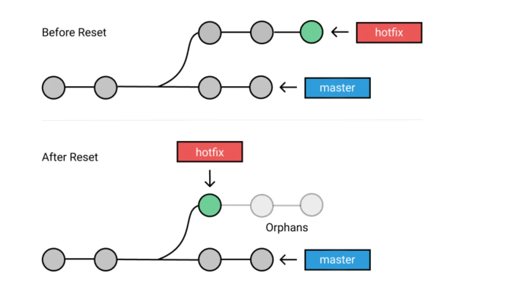

Wykład 2
Kontynuacja pracy z Git i GitHub
Przypominając sytuację w jakiej się znajdujemy… utworzyliśmy repozytorium o nazwie DariuszMajerek/Github_tests. Dokonaliśmy w nim kilku zmian commitowanych za każdym razem. Podgląd tych zmian możemy dokonać przez przegląd commitów.
git log
Fork repo
Zmian możemy dokonywać również w repo, których autorem jest ktoś inny. Najpierw należy wykonać fork takiego repo, a następnie dokonać zmian. Dokonamy najpierw forka przykładowego repo octocat/Spoon-Knife1. Można tego dokonać na stronie repo kliknąć przycisk fork

Zostaniesz wówczas zapytany czy chcesz skopiować jedynie główną gałąź repo i pod jaką nazwą chcesz go skopiować.

Wybranie opcji domyślnych jest zalecane, jeśli chcemy dokonać później tzw pull request (o tym za chwilę). Po skopiowaniu fork cudzego repo na moim koncie GitHub wygląda następująco. Pod nazwą repo widnieje nazwa repo skąd zostało ono skopiowane.

Kopiowanie czyjegoś repo robimy kiedy chcemy zmodyfikować kod istniejący bez ingerencji w oryginalny kod (oryginalny stan repo) a następnie go (poprawionego) wypchnąć. Póki co fork czyjegoś repo znajduje się jedynie w naszym repo zdalnym. Aby pobrać go do repo lokalnego, trzeba wykonać następujące czynności:
- przejść do katalogu, w którym chcemy zapisać kopię repo
- skopiować adres dostępu do kopiowanego repo (HTTPS lub SSH)
- wykonać polecenie
git clone <forked_repo_url>, gdzie<forked_repo_url>oznacza właśnie skopiowany adres repo.
# najpierw sprawdź miejsce w którym się znajdujesz (katalog roboczy)
pwd
# przejdź do katalogu wyżej (tam chcę skopiować repo)
cd ..
# sklonuj forka repo
git clone git@github.com:DariuszMajerek/Spoon-Knife.git
Znów czujne oko wychwyci, że podając adres repo zmieniłem go z git@github.com:DariuszMajerek/Spoon-Knife.git na git@github.com-work:DariuszMajerek/Spoon-Knife.git, to dlatego, że na komputerze, na którym to robię mam połączone dwa konta GitHub i aby je rozróżniać stosuję taką podmianę.
Po skopiowaniu repo na dysk lokalny, możemy przystąpić do dokonywania modyfikacji w repo. Na potrzeby przykładu zmienimy wartości w pliku style.css. W części dotyczącej stylu paragrafu zmienimy dwie wartości:
- oryginalne wartości
p {
display: block;
width: 400px;
margin: 50px auto;
font: 30px Monaco,"Courier New","DejaVu Sans Mono","Bitstream Vera Sans Mono",monospace;
}- wartości po zmianach
p {
display: block;
width: 500px;
margin: 50px auto;
font: 20px Monaco,"Courier New","DejaVu Sans Mono","Bitstream Vera Sans Mono",monospace;
}# sprawdźmy czy zmiany zostały zarejestrowane
git status
# możemy ponadto podejrzeć zmiany za pomocą
git diff
Teraz zmiany trzeba zatwierdzić i commitować.
git add .
git commit -m "style changes"Następnie wypychamy zmiany do zdalnego repo. Najpierw możemy sprawdzić czy adres zdalnego repo jest ustalony.
# sprawdzamy czy adres zdalenego repo istnieje
git remote -v
# skoro tak to wypychamy główną gałąź do repo zdalnego
git push origin main
Teraz zarówno repo lokalne, jak i zdalne mają tą samą zawartość i tą samą wersję. Częściej jednak w tego typu współpracy nad kodem umieszczonym w repo będziemy tworzyli własną gałąź w forkowanym repo.
Za każdym razem, gdy pracujesz nad wspólnym projektem, ty i inni programiści współtworzący repozytorium będziecie mieli różne pomysły na nowe funkcje lub poprawki jednocześnie. Niektóre z tych nowych funkcji nie zajmą dużo czasu na wdrożenie, ale niektóre z nich będą trwały. Z tego powodu ważne jest rozgałęzienie repozytorium, aby móc zarządzać przepływem pracy, izolować swój kod i kontrolować, które funkcje wracają do głównej gałęzi repozytorium projektu.
Kontrola wersji - cofanie zmian
W tym celu najpierw nauczymy się cofać zmiany dokonane zarówno w repo lokalnym i zdalnym. Zacznijmy od sprawdzenia logów repo.
git log
Widać, że oprócz trzech zmian repo dokonanych przez autora (octocat) jest zmiana stylu dokona przeze mnie. Logi są zawsze wyświetlane w kolejności od najaktualniejszego (na górze) do najstarszego (na dole). Możemy się cofnąć do stanu zachowanego dowolnym commitem 💪.
Cofanie stanu repo można wykonać na dwa sposoby:
- poprzez
git reset - oraz
git revert
Działanie obu tych funkcji różni się nieco i obie je omówimy.
Reset
Polecenie git reset służy do cofnięcia zmian w katalogu roboczym i powrotu do określonego zatwierdzenia, jednocześnie odrzucając wszystkie zatwierdzenia wykonane po nim. Na przykład, wyobraź sobie, że wykonałeś dziesięć commitów. Użycie git reset na pierwszym zatwierdzeniu usunie wszystkie dziewięć zatwierdzeń, przenosząc cię z powrotem do etapu pierwszego zatwierdzenia. Przed użyciem git reset ważne jest, aby wziąć pod uwagę rodzaj zmian, które planujesz wprowadzić; w przeciwnym razie stworzysz więcej chaosu niż pożytku.
Możesz użyć wielu opcji wraz z git reset, ale to są te główne. Każda z nich jest używana w zależności od konkretnej sytuacji: git reset --soft, git reset --mixed i git reset --hard.
Flaga --soft ma na celu zmianę odniesienia HEAD (stanu gdzie znajduje się ostatni commit na komputerze lokalnym) do określonego commita. Na przykład, jeśli zdamy sobie sprawę, że zapomnieliśmy dodać plik do commita, możemy cofnąć się za pomocą --soft w następujący sposób:
git reset --soft HEAD~naby cofnąć się do zatwierdzenia z określonym odniesieniem (n).git reset --soft HEAD~1cofa do ostatniego zatwierdzenia.git reset --soft <commit ID>cofaHEADdo<commit ID>
gdzie <commit ID> jest tagiem commita. Opcja --soft nie wymaga ponownego dodawania plików, które zostały dodane w poprzednim commicie.

Flaga --mixed jest domyślnym ustawieniem polecenia git reset. Uruchomienie tego polecenia ma dwa skutki:
- od-commituje wszystkie zmiany
- usuwa je ze Stage
Używamy jej gdy np. w commitowanym stanie repo uznaliśmy, że nie warto go wypychać, ponieważ jeden z plików, który commitujemy ma jeszcze błędy i należy go poprawić przed git push.

Flaga --hard powinna być używana z rozmysłem, ponieważ może wyrządzić sporo szkód. Opcja --hard odrzuca wszelkie zmiany dokonane w śledzonych plikach w katalogu roboczym i resetuje je do stanu określonego commita.


Revert
Polecenie git revert służy do utworzenia nowego commitu, który cofa zmiany wprowadzone w określonym poprzednim commicie. W przeciwieństwie do git reset, które przemieszcza wskaźnik HEAD i gałęzi do innego commitu, git revert tworzy nowy commit, który odwraca zmiany w poprzednim commicie.
Pokażę to na przykładzie, korzystając z wcześniejszego scenariusza z trzema commitami i trzema plikami (plik1.txt, plik2.txt, plik3.txt).

Po użyciu git revert nie ma żadnych niezatwierdzonych zmian. Wprowadza nowy commit, który cofa zmiany wprowadzone w poprzednim commicie. Dzięki temu możemy utrzymać spójność historii i uniknąć problemów z innymi współpracownikami, którzy już pobrali nasze zmiany.
Różnice między git revert a git reset:
git revertwprowadza nowy commit, zachowując historię.git resetprzemieszcza wskaźnik HEAD, usuwając zmiany z historii.git revertjest bezpieczniejsze do stosowania w publicznych repozytoriach, ponieważ nie wymaga modyfikowania historii, co może utrudnić współpracę z innymi programistami.

Teraz możemy wrócić do zadania usunięcia zmian (ostatniego commita) w repo DariuszMajerek/Spoon-Knife. Musimy wykonać następujące czynności w katalogu Spoon-Knife.
Jeśli chcesz przejść do wcześniejszej wersji zdalnego repozytorium w tej samej gałęzi i usunąć najnowsze commity, można skorzystać z polecenia git reset w trybie --hard. Jednak pamiętaj, że git reset --hard jest operacją radykalną i trwale usuwa commity, więc bądź pewien, że chcesz to zrobić, ponieważ stracisz historię tych commitów.
Oto kroki, które możesz podjąć:
- Sprawdź dostępne gałęzie zdalne:
git branch -r- Pobierz najnowsze zmiany z repozytorium zdalnego:
git fetch origin- Przejdź do gałęzi, w której chcesz cofnąć zmiany:
# to nie jest konieczne bo już jesteśmy w tej gałęzi
# ale nie zawsze tak będzie
git checkout main- Zidentyfikuj commit, do którego chcesz się cofnąć:
git logOdnajdź hasz commitu, do którego chcesz się cofnąć.
- Użyj
git reset --harddo cofnięcia zmian:
git reset --hard hasz-commituZastąp hasz-commitu odpowiednim hasłem commitu, do którego chcesz się cofnąć.
- Przesuń zmiany na repozytorium zdalne:
git push origin main --forceUwaga: Użycie --force jest konieczne, ponieważ zmieniasz historię i wymagane jest przeforsowanie zmian na repozytorium zdalne. Jednak bądź bardzo ostrożny, używając --force, ponieważ może to wpłynąć na innych współpracowników korzystających z tej gałęzi.

W ten sposób wróciliśmy do oryginalnego stanu pobranego repo octocat/Spoon-Knife. Możemy teraz przystąpić do tworzenia własnej gałęzi w tym repo i dokonania w nim zmian. Na końcu będziemy chcieli dokonać łączenia gałęzi (naszej po poprawkach) z oryginalną poprzez pull request.
Działanie na gałęziach
# zaczynamy od sprawdzenia w której gałęzi jesteśmy
git branch
# teraz tworzymy nową gałąź w obecnej
git branch my_branch
# teraz do niej przechodzimy
git checkout my_branch
# dwie ostatnie czynności można wykonać jedną komendą
git checkout -b my_branchTeraz dokonujemy tych samych zmian w pliku styles.css, których dokonaliśmy w gałęzi głównej.
# po zmianach sprawdzamy status repo w gałęzi my_branch
git status
# widać że zmiany nastąpiły więc je dodajemy do Stage
git add styles.css
# commitujemy zmiany
git commit -m "style changes"
# wypychamy zmiany/commita do nowej gałęzi
git push origin my_branch
Jak można zauważyć na powyższym obrazku system sugeruje dokonanie pull request, czyli prośby (w tym przypadku skierowanej do octocat) o połączenie (czyli merge) gałęzi głównej z gałęzią my_branch.
Aby dokonać pull request nowej gałęzi w systemie Git, zazwyczaj korzysta się z platformy do zarządzania kodem, takiej jak GitHub, GitLab lub Bitbucket. Poniżej przedstawiam ogólny przewodnik krok po kroku, korzystając z GitHuba jako przykładu. Procedury na innych platformach są zbliżone, ale mogą się różnić w szczegółach.
Utwórz nową gałąź w lokalnym repozytorium:
git checkout -b nazwa-nowej-gałęziWykonaj pracę na tej gałęzi i zatwierdzaj zmiany.
Push nowej gałęzi na repozytorium zdalne:
git push origin nazwa-nowej-gałęziTo przesyła nową gałąź na repozytorium zdalne2.
Otwórz przeglądarkę i przejdź do repozytorium na GitHubie.
Przejdź do nowej gałęzi - w zakładce “Branch” na stronie repozytorium, wybierz nową gałąź.
Utwórz Pull Request:
- Na stronie gałęzi wybierz przycisk “New pull request”.
- Wybierz gałąź docelową, zazwyczaj jest to
masterlub inna główna gałąź.
Uzupełnij informacje dotyczące Pull Request:
- Uzupełnij tytuł i opis dotyczący zmiany, które wprowadziłeś.
- Sprawdź, czy Pull Request spełnia oczekiwania dotyczące kodu i testów.
Utwórz Pull Request - kliknij przycisk “Create pull request”, aby utworzyć Pull Request.
Dokonaj przeglądu i zatwierdź:
- Inni członkowie zespołu mogą dokonać przeglądu zmian.
- Po zakończonym przeglądzie i zatwierdzeniu zmian, Pull Request może być scalony (merged).
Zaktualizuj lokalne repozytorium - po scaleniu Pull Requesta na repozytorium zdalnym, zaktualizuj swoje lokalne repozytorium:
git checkout master git pull origin masterW ten sposób przyniesiesz zmiany z gałęzi docelowej (np.
master) do swojego lokalnego repozytorium.